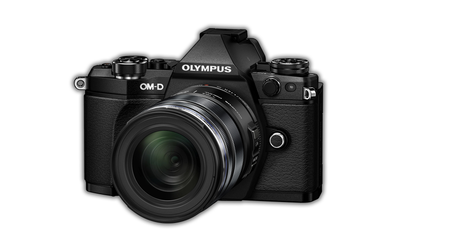

Olympus E5 M2
Truly Best of 2015.
The Olympus E-M5 II is a more significant reworking of its predecessor than its looks or choice of sensor seem to suggest.
The Olympus E-M5 II is a more significant reworking of its predecessor than its looks or choice of sensor seem to suggest.